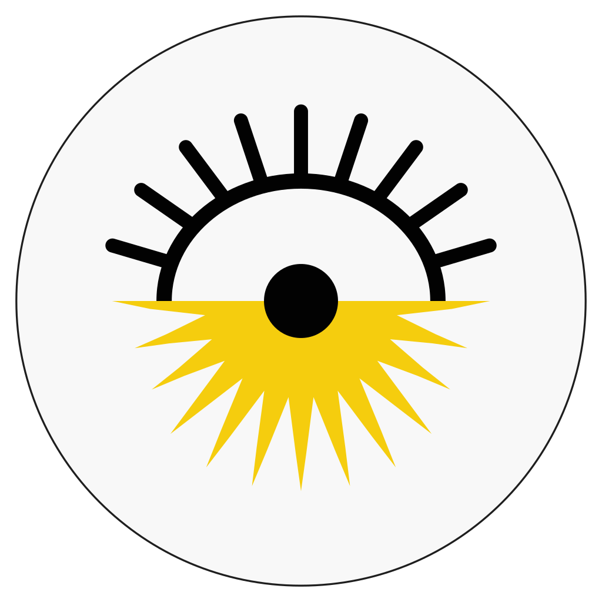

Roj
Your day, the Kurdish way.
The Kurdish solar calendar on your toolbar, with the Gregorian, Persian and Islamic dates side by side.
Sorani & KurmanjiEvents & holidaysWorks offlineNo tracking
New tab


The Kurdish solar calendar on your toolbar, with the Gregorian, Persian and Islamic dates side by side.
Newroz, holidays and days of remembrance built in. Add .ics files and online calendars.


Between the Kurdish, Gregorian, Persian and Islamic calendars, with the Julian day.

Patterns for every date, a font for each script, and the same settings as Roj on GNOME.


Each calendar can speak its own language, with its own digits.

The Kurdish calendar in your browser
Today's Kurdish date on your toolbar, events and holidays, and a date converter, in five languages.